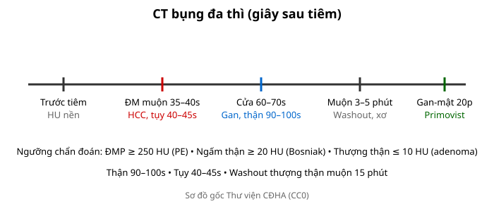
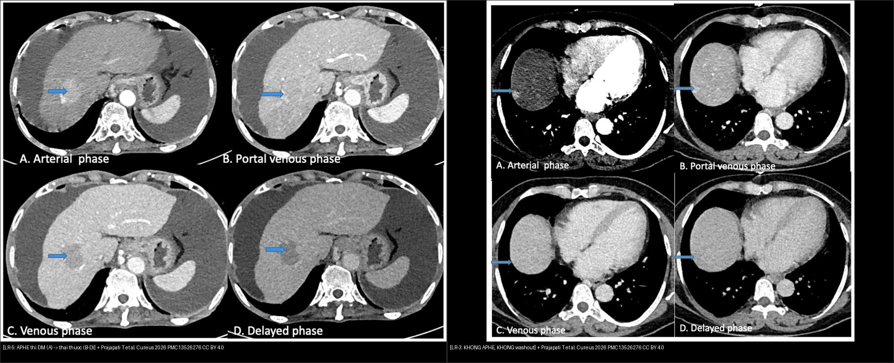
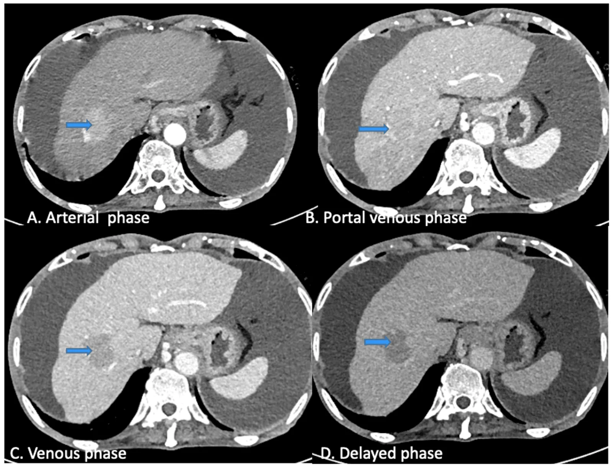

101 — Protocol CT/MRI bụng đa thì & Primovist / Multiphasic abdomen protocol
Tags: pattern:protocol-bung vung:bung protocol:CT-MRI-bung
Mức chắc chắn (certainty): tổng hợp y văn (literature synthesis) — nhóm tự biên từ y văn mở, chưa gắn ca nguyên văn đơn lẻ.
1. Tổng quan — đúng thì mới thấy bệnh + 4 mốc giây
- Mỗi tạng có thì ngấm cực đại riêng: động mạch gan 35–40s, tụy 40–45s, cửa gan 60–70s, thận 90–100s, muộn 3–5p, gan-mật Primovist 20p.
- TẠI SAO sai thì mất bệnh: HCC chỉ sáng 35–40s (chụp muộn thành đẳng đậm độ giả âm); hoại tử tụy chỉ lộ thì tụy 40–45s; washout thượng thận cần muộn đúng 15p.

Sơ đồ gốc Thư viện CĐHA, CC0.2. Gamut chỉ định theo thì
- Động mạch muộn: HCC, pNET, chảy máu hoạt tính (thoát thuốc), PE (ĐMP ≥ 250 HU).
- Cửa + thận: u gan/thận, viêm, áp-xe, ruột (thành + mạch mạc treo).
- Muộn: washout (gan/thượng thận), xơ, sẹo, niệu (bài tiết).
- Primovist 20p: FNH giữ thuốc vs HCC thải; đường mật.
3. Bảng thì-chỉ định
| Thì (giây) | Tạng đích | Tìm gì | Bẫy nếu sai thì |
|---|---|---|---|
| ĐM muộn 35–40s | Gan/ĐM | APHE HCC, chảy máu hoạt tính | Chụp sớm = ĐM chưa lên; muộn = mất APHE |
| Tụy 40–45s | Tụy | Hoại tử (không ngấm), pNET ngấm | Cửa mới chụp = bỏ sót hoại tử |
| Cửa 60–70s | Gan/ruột | Washout, thành ruột, TM cửa | — (thì chuẩn đa số) |
| Thận 90–100s | Thận | Ngấm Bosniak (≥ 20 HU) | Sớm = giả không ngấm |
| Muộn 3–5p / 15p TT | Gan/TT | Washout, APW/RPW | Sai phút = sai công thức |
| Gan-mật 20p | Gan/mật | FNH giữ, HCC thải | Suy gan = ngấm kém |

Cùng là một nốt gan, chỉ KHÁC động học ngấm thuốc: trái = LR-5 — ngấm mạnh thì động mạch (A, APHE) rồi thải thuốc dần ở thì cửa/tĩnh mạch/muộn (B–D, washout); phải = LR-3 — không APHE, không washout. Chụp thiếu thì động mạch HOẶC thiếu thì muộn thì CẢ HAI đều không phân loại được — đó là lý do bắt buộc protocol đủ thì. Nguồn: Prajapati T et al., Cureus 2026 (PMC13526276), CC BY 4.0. Ảnh ghép letterbox.4. Protocol chuẩn + Primovist
- CT: trước tiêm (HU nền) + ĐM muộn + cửa + muộn (+ thận khi cần); MPR coronal.
- MRI + Gadoxetate: ĐM/cửa/muộn + gan-mật 20p (FNH/HCC nhỏ, đường mật).
- Bụng cấp: cửa 1 thì đủ đa số (trừ chảy máu → thêm ĐM, sỏi → thêm trước tiêm).
5. Cạm bẫy
- Không thì trước tiêm = không tính washout/APW/Bosniak — protocol thiếu là vô dụng.
- Bệnh nhân nín thở kém lệch thì — bolus-tracking + dặn trước.
- Suy thận/suy gan đổi động học thuốc — giảm liều + MRI thay thế.
6. Tự lượng giá — Blind Quiz
Ca 1 — Nghi HCC, CT chỉ có thì cửa: đủ kết luận không? Thiếu gì? (Bảng mục 3.)
Bấm để hiện đáp án
- Không đủ: thiếu ĐM muộn (APHE) + muộn (washout) — chụp lại đủ 4 thì.
Ca 2 — Thượng thận 2,5 cm + 25 HU, cần tính APW: cần thêm thì nào, lúc nào? (Bảng mục 3.)
Bấm để hiện đáp án
- Cửa 70s + muộn đúng 15p — sai phút là sai công thức.
Ca 3 — CT bụng 4 thì cho một nốt gan (ảnh trơn ngoài). Nhìn trước, tự phân loại.

- Gợi ý lâm sàng: bệnh nhân ung thư gan được chụp CT 4 thì (không lộ chẩn đoán).
- Câu hỏi: Nốt (mũi tên) thay đổi thế nào qua thì động mạch → cửa/tĩnh mạch/muộn? Thuộc nhóm LI-RADS nào và vì sao?
Bấm để hiện đáp án
- Dấu hiệu (findings): (A) thì động mạch — nốt (mũi tên) ngấm mạnh hơn nhu mô gan (APHE); (B–D) thì cửa/tĩnh mạch/muộn — nốt trở nên giảm đậm độ so với gan (washout).
- Chẩn đoán (diagnosis): LR-5 — HCC chắc chắn — vì APHE + washout là hai đặc điểm chính của LI-RADS (nếu chỉ có thì cửa sẽ mất cả hai). Bài học: chụp thiếu thì = không phân loại được.
- Nguồn ảnh: Prajapati T et al., Cureus 2026 (PMC13526276), CC BY 4.0 — Fig 5 (LR-5).
Ca 4 — Nốt gan 12 mm, CT chỉ có thì cửa (không APHE, không washout), nền gan xơ: xếp nhóm nào? (Bảng mục 3 + bài 121.)
Bấm để hiện đáp án
- LR-3 (không đủ đặc điểm chính) — cần chụp lại đủ thì động mạch + muộn, theo dõi 3–6 tháng; thiếu thì không được phép đẩy lên LR-5.
- Nguồn số liệu: Prajapati T et al., Cureus 2026 (PMC13526276), CC BY 4.0 (Fig 4 = ví dụ LR-3).
Bài liên quan chéo
- 100 – Tổng quan hệ Bụng
- 110 – Giải phẫu bụng (mốc Cantlie)
- 121 – LI-RADS (APHE/washout)
Không dùng để chẩn đoán độc lập khi chưa có người hướng dẫn.